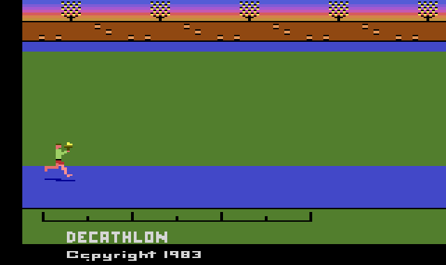
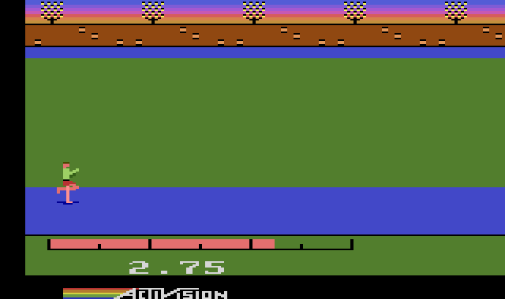
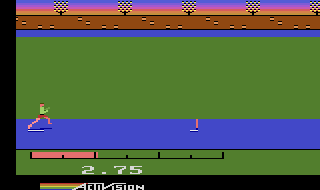
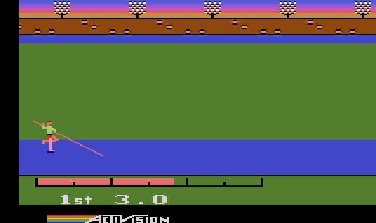
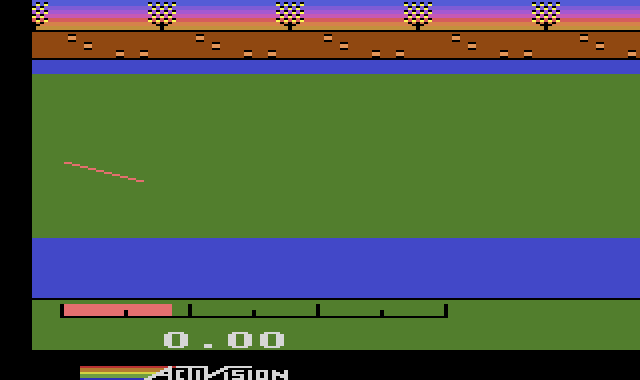

Decathlon
David Crane's ten events of track and field for one to four athletes: run by moving the joystick left and right as fast as you can, and press the button to jump, put, throw and vault. The cartridge's own program, translated into JavaScript one instruction at a time with every cycle counted, so every race runs exactly as on the console.

How to play
Ten events in a row, scored in points: the faster you run and the further or higher you jump and throw, the more you score. Running is the joystick moved left and right, again and again: the faster you change direction, the faster your athlete runs. Every event starts with a run.
Controls
- Game Select (pick a game)X
- Game Reset (start)Enter
- Joystick (run: left and right in turn)arrows / WASD
- Fire buttonSpace or Z
- Pause · MuteP · M
Gamepad: stick or D-pad to run, A/B/X/Y for the button, Start for Game Reset, Back for Game Select. Keyboard and pad work together.
The cartridge reads only Game Select and Game Reset; the Color/B&W and difficulty switches do nothing in this game, so the page leaves them out.
Picking a game
Each press of Game Select shows the next of 14 games: the whole decathlon for one, two, three or four athletes (the numbers 1 to 4 appear on the field), then each of the ten events on its own. Game Reset starts the game shown, and during a game starts it over from the 100 metres.
The athletes take turns on the one joystick: each event is run by athlete 1, then 2, and so on. A single event is always for four athletes, and the game waits for each one's turn, so on your own press Game Reset to run it again.
Running
Press ← and → one after the other as fast as you can keep it up: the game counts every push of the joystick, and the bar under the track shows your speed. Speed comes in steps: about 12 pushes a second runs the 100 metres in 11.3 seconds, 16 a second in 10.2.
Every push counts, so tapping one direction alone works as well as alternating. Both directions at once count as neither, as on a real joystick.
On a phone, rub your thumb left and right across the ◀ ▶ pad, or tap its two halves in turn, and press Fire with the other thumb.
The ten events
- 100 metres: run.
- Long jump: run, and press the button as close to the scratch line as you dare: the later the take-off, the longer the jump. Over the line is a scratch.
- Shot put: run at full speed and press the button before the scratch line; the speed at the press decides the distance.
- High jump: run, and press the button a stride before the bar (pressing at the bar is too late). A faster run-up clears higher bars.
- 400 metres: run.
- 110 metre hurdles: keep running the whole way, in the air too, and press the button a stride before each hurdle. Jumping too early is worse than not jumping.
- Discus: as the shot put: full speed, then the button before the line.
- Pole vault: press the button early in the run-up to lower the pole (it plants itself in the box), keep running, and press it again at the top to let go. Pressing only at the box is too late.
- Javelin: run, and throw as close to the scratch line as you dare: the closer, the longer.
- 1500 metres: there is no stamina to save. Keep a steady run; speed counts most on the final stretch, so sprint there.
In the field events each athlete gets three attempts in a row and the best counts. In the high jump and pole vault the bar goes up after each clearance, and three misses end the event. Holding the button never changes anything: only when you press it.
The events




Built from the ROM
This is not an emulator, and not a remake. The cartridge was disassembled from scratch (no published source existed), reassembled to prove the disassembly byte for byte identical to the cartridge, and then a translator wrote out each instruction as a line of JavaScript with its cycle count. The translated game runs on a model of the 2600's TIA and RIOT chips, and a 6502 core runs the real ROM beside it to prove the two match.
- Decathlon switches between its two 4K banks in Activision's own way, which only it and Robot Tank used: there are no switch addresses. The cartridge watches the bus, and when a subroutine call or return passes through the top of the stack, the address being jumped to picks the bank. Code in one bank sits at
$Fxxx, in the other at$Dxxx, so calling a routine is all it takes to switch. - That makes the order of the processor's bus accesses part of the game: the port's 6502 makes a subroutine call's stack writes and address reads in the real chip's order, or the wrong bank would answer.
- Of the console switches, the code reads only Game Reset and Game Select.